Có lẽ chưa bao giờ du lịch Việt Nam trầm lắng đến thế. Những bãi biển chỉ một màu cát trắng vắng dấu chân người, những thành phố du lịch tĩnh lặng đến khắc khoải. Người trẻ lục giở các album ảnh và dòng trạng thái facebook cũ, gặm nhấm chút không khí hội hè sôi động còn sót lại, với pháo hoa rợp trời Đà Nẵng, với carnival sặc sỡ sắc màu khuấy động Sầm Sơn, với những vũ hội tưng bừng như trong cổ tích ở xứ sở thần tiên Bà Nà, hay những đêm nhạc cả nghìn người mê say trong thanh âm và nhiệt huyết giữa quảng trường lộng gió.
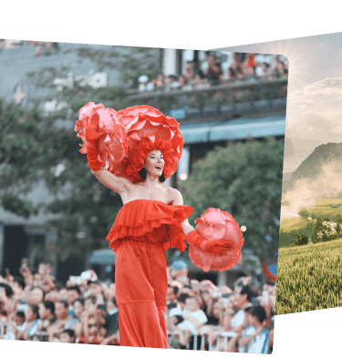Và nỗi nhớ không chỉ của riêng du khách. Những điểm “nhất định phải đến” này cũng đang nhớ tê tái tiếng cười, bước chân tung tăng và những lần ghé thăm của bạn…
Chinh phục đỉnh Fansipan luôn là hành trình hấp dẫn với bất cứ ai.
Đặc biệt, kể từ khi có cáp treo Fansipan, giấc mơ chạm tay vào “nóc nhà Đông Dương” không chỉ còn là đặc quyền của tuổi trẻ sức dài vai rộng. Khoảnh khắc đứng giữa non sông đất nước, hát vang bài quốc ca dưới lá cờ đỏ thắm tung bay trong gió lộng đã trở thành niềm hân hoan của bất cứ ai, đặc biệt là các cụ già và các cựu binh.
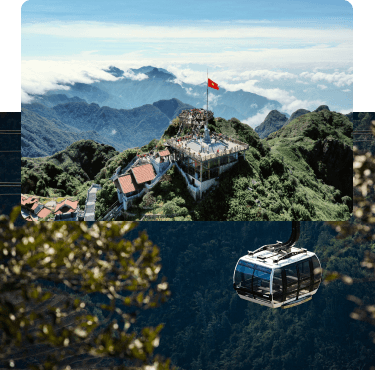Tháng 9 hàng năm là độ Sa Pa đẹp nhất, ngọt ngào nhất. Những triền núi lớp lớp ruộng bậc thang vẫn trải qua từng ấy mùa, từ lúc xanh mướt đến khi vàng rực màu lúa chín. Du khách nô nức kéo nhau đi tàu hỏa leo núi Mường Hoa từ thị xã lên Sun World Fansipan Legend để bái Phật cầu an, check-in thung lũng hoa bạt ngàn như xứ sở thần tiên. Và nếu không có Covid-19, ắt hẳn facebook hay instagram giờ này đã phủ một màu tím biếc của mã tiền thảo, bềnh bồng như mây của đồi hoa đuôi công hay đốt cháy new feed bằng 1001 bức ảnh nam thanh nữ tú giữa biển hoa dơn lúa rực lửa lần đầu tiên xuất hiện tại Sa Pa năm nay.
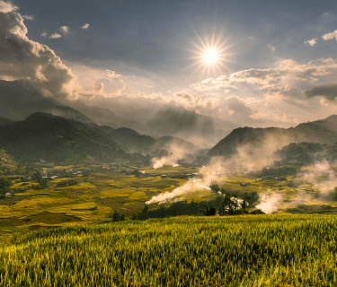Bạn còn nhớ chứ, cái không khí lành lạnh của buổi tối Sa Pa dù ở bất kì mùa nào trong năm? Bạn sẽ mặc một chiếc áo len mỏng, dạo bước quanh thị trấn ngập tiếng cười vui, tiếng nói cười, ca hát của những chàng trai, cô gái H'Mông. Rồi ghé một quán nướng nghi ngút khói, thưởng thức món lợn bản cuốn cải mèo hấp dẫn.
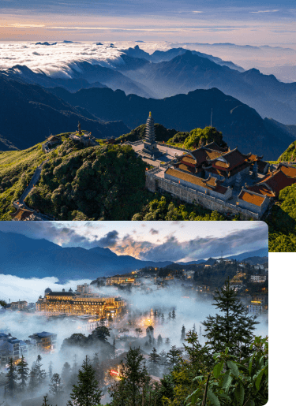Buổi tối thì rủ nhau đi massage và tắm lá người Dao truyền thống, hay trở về thư giãn giữa không gian xa hoa của khách sạn 5 sao quốc tế Hotel de la Coupole, MGallery, thả mình trong bể bơi nước nóng Le Grand Bassin…. Tất cả đều chân thực như thể chạm tay là tới.
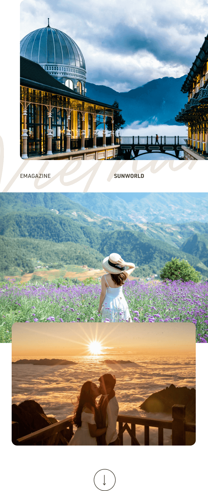Từ vài năm nay, Hạ Long không còn là điểm đến quen thuộc của riêng du khách miền Bắc, mà đã trở thành địa điểm khám phá cho du khách ở khắp mọi miền, nhất là khi Sân bay quốc tế Vân Đồn và những chuyến bay thẳng Tp. Hồ Chí Minh – Vân Đồn đi vào hoạt động, đưa mọi người đến gần với thành phố di sản hơn.
Và trong những ngày “cuồng chân mỏi gối” này, chắc hẳn người Nam kẻ Bắc đều đang nhớ Hạ Long da diết.
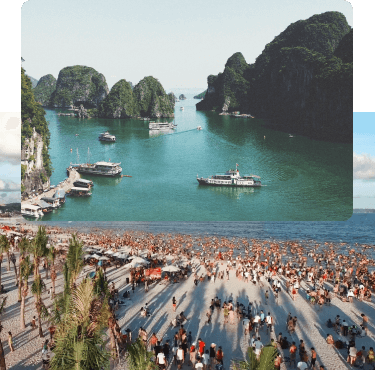Một thành phố sôi động ngập tràn khám phá, được ví như thành phố không ngủ với tổ hợp vui chơi giải trí lớn nhất miền Bắc Sun World Halong Complex - nơi đã xuất hiện trong vô vàn tấm hình check in.
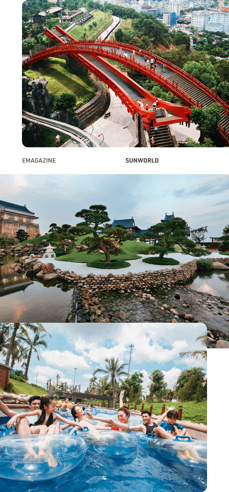Nào là cáp treo khổng lồ và vòng quay Mặt trời ngắm biển từ trên cao, hàng chục trò cảm giác mạnh cực khủng tại công viên nước mát lạnh và công viên Rồng, hay khám phá “Nhật Bản thu nhỏ” với cây cầu Koi đỏ rực ở núi Ba Đèo.
Một thành phố không ngủ với những dãy shophouse dọc bãi Cháy tưng bừng âm nhạc, lấp lánh ánh đèn, nơi bạn tìm thấy một Hạ Long thật mới, thật trẻ trung, thật hấp dẫn.
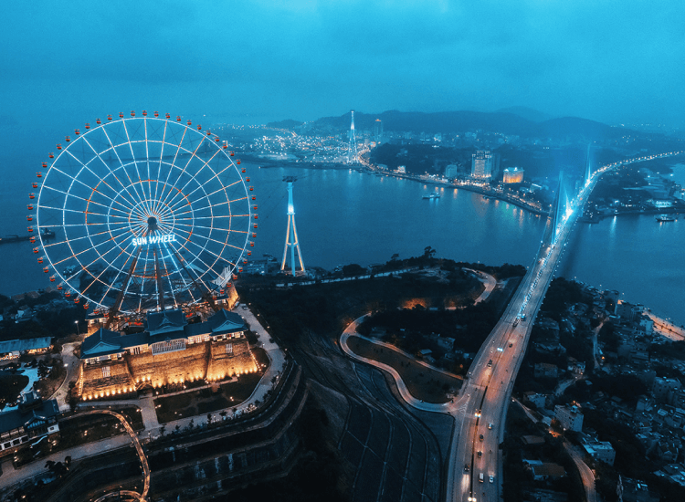Bạn có nhớ thành phố lãng mạn và rất thơ, với vịnh di sản thế giới đẹp như tranh vẽ xuất hiện trong vô vàn tấm hình check in, không chỉ của người Việt Nam mà còn của nhiều du khách quốc tế. Người yêu biển có thể chèo thuyền kayak giữa vịnh biếc xanh, ngắm các tạo tác tuyệt vời của tạo hóa bên trong những hang đá giữa biển khơi, hay chỉ đơn giản là thả mình trên một du thuyền, ngắm vịnh biển mờ sương mai, nhấp nhô những núi đá vôi huyền ảo dần hiện rõ theo những tia nắng đầu ngày lấp lánh. Buổi tối trở về, lại tha hồ đánh chén những món hải sản tươi roi rói vừa được bắt lên từ biển. Cái cảm giác ấy thật khó quên!
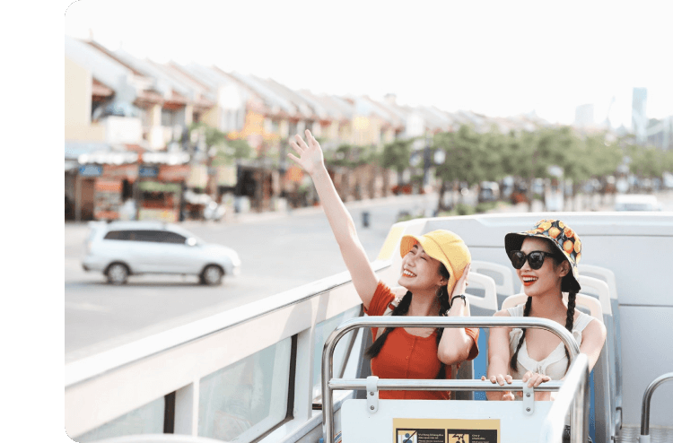Một thành phố nuông chiều bạn đến mức độ không có lý do gì để không quay trở lại. Ẩm thực phong phú và ngon miệng khó cưỡng, khách sạn và những khu nghỉ dưỡng xịn xò ngay trung tâm như Premier Village Halong Bay Resort. Khi việc di chuyển chỉ mất 1-3 giờ đồng hồ với sân bay, cảng biển và những cao tốc mới hiện đại bậc nhất Việt Nam, thì chỉ cần có lời mời “Hạ Long không?” là sau một nốt nhạc sau, bạn đã ở bên vịnh biển.
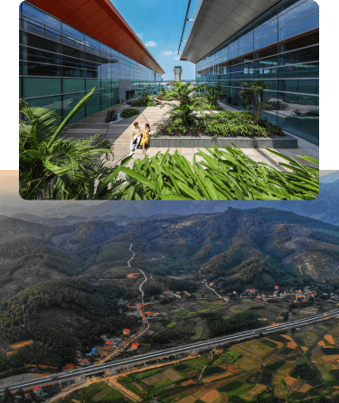Và không thể không nhắc đến suối khoáng nóng tại Yoko Onsen Quang Hanh cách Hạ Long 30km, giữa thiên nhiên xanh mát, trong lành. Dù là một trong những điểm du lịch mới mẻ nhất tại Quảng Ninh, nhưng Yoko Onsen Quang Hanh khiến cho bất cứ ai đã đến một lần là muốn trở lại nhiều lần hơn nữa. Giữa thung lũng khoáng đạt và không gian đậm chất Nhật Bản, bạn sẽ được tận hưởng cảm giác thư giãn khi ngâm mình trong dòng khoáng quý phục hồi sức khỏe, giải toả căng thẳng sau nhiều ngày mệt mỏi. Chẳng nơi nào có được một không gian Nhật Bản đến như thế, xịn xò và nâng niu bạn đến như thế.
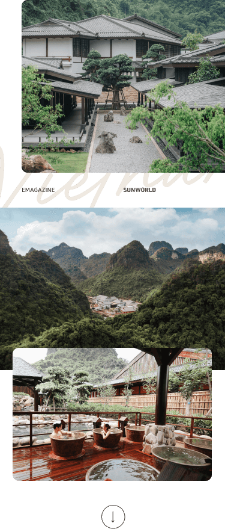Có lẽ không chỉ các du khách Việt Nam mà nhiều du khách quốc tế cũng rất nhớ Đà Nẵng.
Một sớm mai trong lành trên bãi biển Mỹ Khê. Khoảnh khắc cầu Quay chuyển mình giữa lung linh sông Hàn và dòng người hối hả. Một đàn voọc nhẩn nha ăn ngọn lá non trên bán đảo Sơn Trà xanh rì. Hay chỉ là những nụ cười dễ mến mà ta có thể bắt gặp ở bất cứ ngả đường nào trên thành phố này.
Và bạn có còn nhớ đó là xứ sở của những niềm vui trải dài như vô tận.
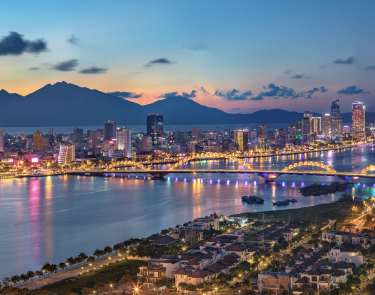Từ Công viên Châu Á – Asia Park giữa trung tâm thành phố với các trò chơi thuộc top đầu thế giới và quảng trường Sun Wheel rộng lớn; Sun World Ba Na Hills với cây Cầu Vàng nổi tiếng thế giới, bốn mùa lễ hội tưng bừng, Beer Plaza rộn ràng và những thảm hoa đẹp hiếm có, cho đến những dãy chợ đêm Sơn Trà lấp lánh ánh đèn, thưởng thức đủ các món đặc sản hấp dẫn, hay đi xa hơn chút nữa, phố cổ Hội An đón bạn với những trải nghiệm vô cùng thú vị.
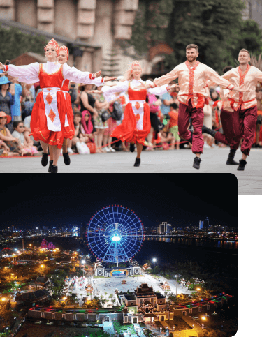Đà Nẵng cũng là thiên đường của nghỉ dưỡng. Premier Village Danang Resort dành cho các gia đình, Mercure Danang French Village Bana Hills dành cho tuần trăng mật và lứa đôi, Novotel Danang Premier Han River ngay giữa trung tâm cho các doanh nhân, InterContinental Danang Sun Peninsula Resort cho giới thượng lưu và chính khách, và vô số lựa chọn đẳng cấp khác muôn màu muôn vẻ như Naman Retreat Resort, Furama Villas Danang,…Mọi nhu cầu nghỉ dưỡng, vui chơi hay làm việc đều trở nên quá đơn giản khi đến với thành phố này.
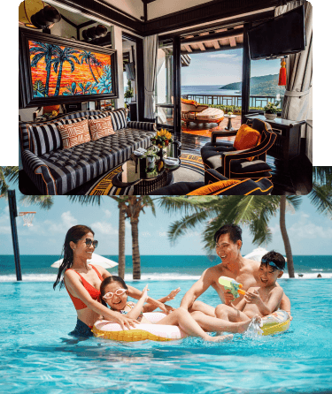Đà Nẵng cũng nhớ bạn theo một cách rất khác. Nỗi nhớ được biến thành những trải nghiệm mới đầy hấp dẫn đón chờ khách du lịch. 12.000 gốc hồng đủ các loài biến Bà Nà Hills thành một xứ sở hương thơm tựa như Bulgari thu nhỏ cùng rất nhiều loài hoa khác, những bức tượng đồng đặc biệt đã được gia tộc điêu khắc lừng danh Frilli từ nước Ý xa xôi lắp đặt xong ở Thác Mặt trời, nhiều trải nghiệm mới hứa hẹn sẽ đưa du khách đi từ bất ngờ này tới ngạc nhiên khác, ngay tại khu du lịch vốn đã quá quen thuộc của Đà Nẵng. Rất nhiều các hạng mục đang được làm mới ở Công viên châu Á- Asia Park hay trong những khu nghỉ dưỡng sang trọng vốn đã làm nên tên tuổi của Đà Nẵng.
Còn chúng ta đã sẵn sàng để lên đường ngay khi hết dịch, phải không?
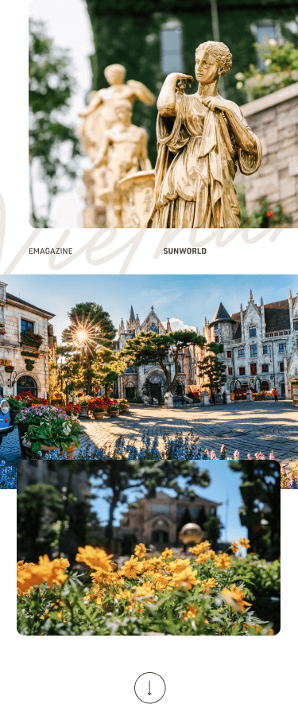
Giữa cái nắng chói chang của phố thị, có phải bạn đang mơ đến biển đảo Phú Quốc xanh rì. Giữa làn nước trong veo màu ngọc bích của Bãi Trào, bạn ngụp lặn xuống đại dương ngắm rặng san hô đẹp lịm tim như những đóa hoa biển, xung quanh đám cá bảy màu tung tăng bơi lội hồn nhiên. Vút xe máy nước trên mặt biển lấp lánh cho tung lên bọt sóng trắng xóa vô cùng sảng khoái, rồi trở về bờ nằm dài dưới bóng dừa mát, cùng nhảy một vũ điệu nóng bỏng, tưng bừng trên bãi cỏ xanh với các vũ công…
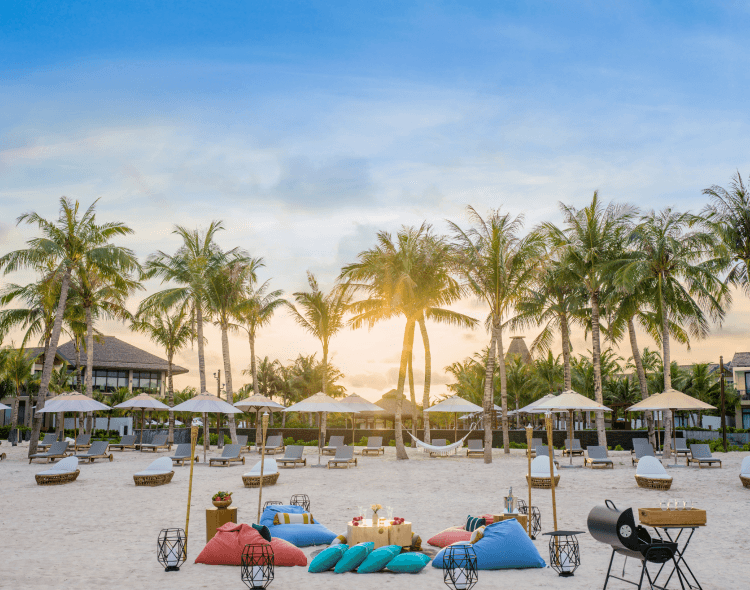Là một trong những địa điểm mới mẻ nhất tại Phú Quốc thời gian gần đây, “thị trấn Amalfi” Sun Premier Village Primavera, nơi có những góc phố, căn nhà rực rỡ sắc màu Địa Trung Hải trải dài hướng ra phía đại dương với tháp chuông “bản sao” của quảng trường San Marco, Venice khiến ai cũng “mê đắm”. Đó là nơi khiến bạn chụp ảnh “cháy máy” mỗi lần đến và có đủ ảnh để sống ảo cho cả năm không hết.
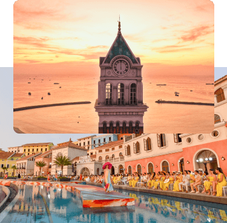Hay bạn có nhớ sự sang chảnh của khu nghỉ dưỡng JW Marriott Phu Quoc Emerald Bay - “ngôi trường đại học trong trí tưởng tượng tuyệt vời của Bill Bensley, sự trẻ trung sôi nổi của khách sạn mang biểu tượng “thùng nước mắm” Premier Residences Phu Quoc Emerald Bay, những villa trắng kiêu kỳ giữa rừng xanh, bên biển biếc ở Premier Village Phu Quoc Resort…
Hễ cứ nhắc đến Phú Quốc, là lại khiến lòng ta muốn chìm vào thư thái, trong những khu nghỉ dưỡng đẹp lạ lùng ấy.
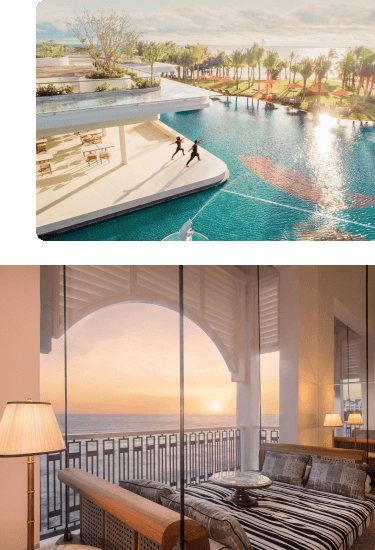Ngày trở lại gần nhất, chắc chắn chúng mình sẽ phải “vui hết nấc” cho thỏa nỗi nhớ mong này. Đến Sun World Hon Thom Nature Park đi cáp treo Hòn Thơm “bay” giữa biển ngọc rừng xanh để ngắm trọn hòn đảo từ trên cao tít. Chơi tất cả những trò chơi tuyệt đỉnh ở công viên nước Aquatopia Park. Đi canô vi vút ra các hòn, câu mực đêm giữa mênh mông sóng nước. Đi chơi vườn tiêu, xưởng ngọc trai và “ăn cả Phú Quốc” cho đã đời bao tháng ngày xa cách.
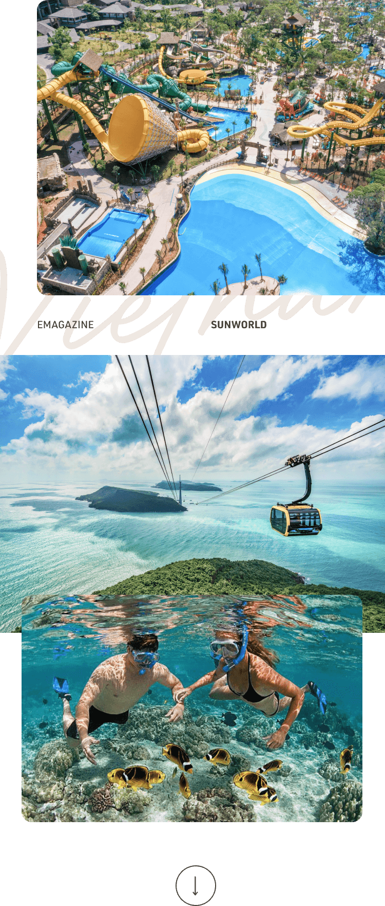